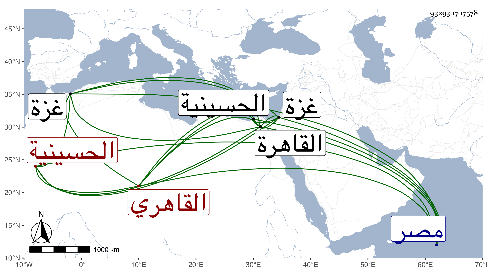

0902Sakhawi.DawLamic.ITO20230111-ara1.EIS1600.932930707578
Biography ID: 932930707578
362
محمد بن أمير حاج بن أحمد بن آل ملك ناصر الدين القاهري ويعرف بقوزي بضم القاف وبعد الواو زاي مكسورة . من بيت إمرة وخير فجده الحاج سيف الدين كان نائب السلطنة بالديار المصرية له مآثر كالجامع بالحسينية والمدرسة المجاورة للدار الحسنة اللتين بقرب المشهد الحسيني بالقاهرة وتنقل بعده ولده في النيابات بغزة وغيرها ثم طرح الإمرة ولبس زي الفقراء وصار يمشي في الطرقات ويكثر الحج والمجاورة ، كان مولد صاحب الترجمة تقريبا سنة ثمان وثلاثين بالقاهرة ونشأ بها ، وسمع في جمادى الأولى سنة أربع وتسعين الختم من الصحيح على الصلاح الزفتاوي وابن الشيخة والأنباسي والمراغي والحلاوي والسويداوي وحفظ القرآن ، وحدث سمعت عليه . وكان خيرا يتكلم على أوقاف جده ، مات في المحرم سنة خمس وخمسين وصلى عليه بباب النصر وكانت جنازته حافلة رحمه الله .
